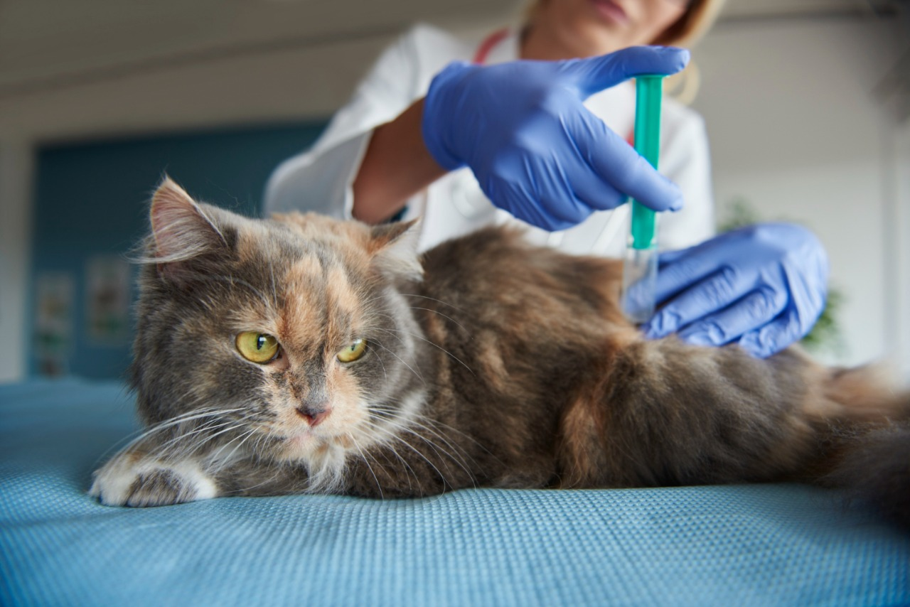
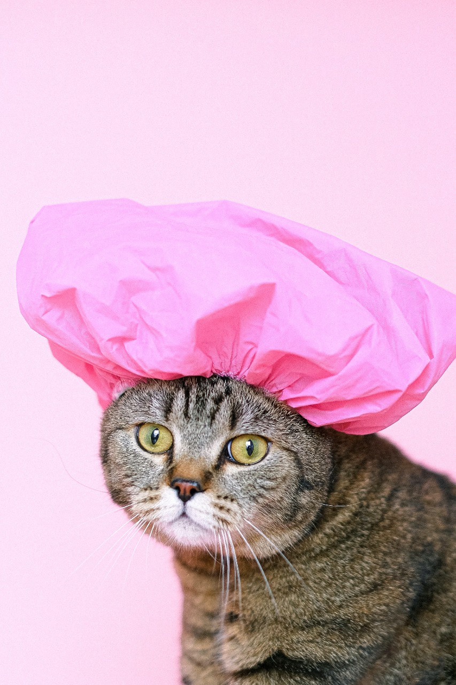
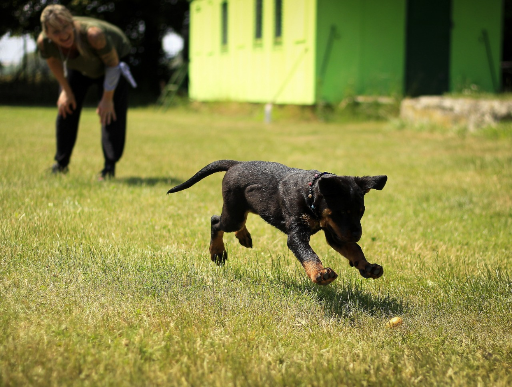
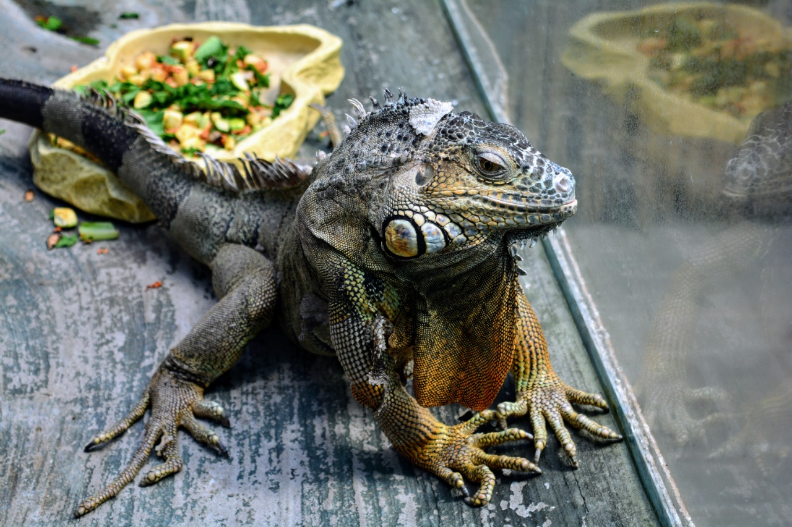
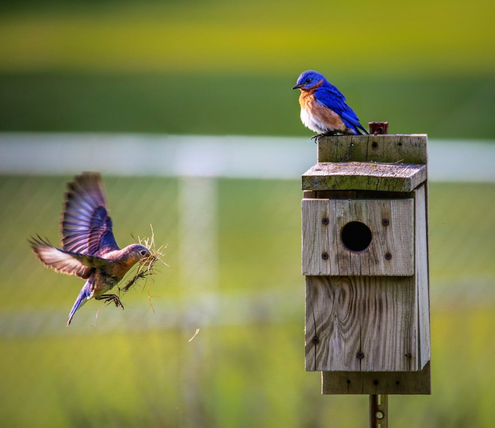

VETERINÁRIO
Serviço disponibilizado 24 horas para consultas, emergências, tratamentos, aplicação de vacina, entre outros, com os melhores profissionais, exercendo o atendimento humanizado respeitando o tempo e espaço de cada pet. Também temos o serviço domiciliar para quem não puder comparecer em nossa clínica.
BANHO E TOSA
Agendamentos disponíveis em nossa loja física, podendo adicionar comentários sobre os gostos e jeito de seu pet para a melhor experiência de banho e tosa.
Adestramento
Curso para educar os modos de seu pet (cachorro, gato, peixe, pássaros, hamster, etc), desde o lugar certo de fazer suas necessidades, até truques para divertimento, incentivando-o em cada etapa com premiações (petisco, brinquedo e medalha de merecimento), lembrando que você dono pode ficar tranquilo, pois cada processo é gravado e vocês também podem acompanhar pessoalmente em uma sala separada do adestrador com o seu pet.
SPA PET
Serviço especial oferecido para o bem-estar do animal, você pode selecionar quais cuidados fará em seu bichinho: tratamento de pele e/ou pelos (neste serviço teremos o cuidado na seleção dos produtos para cada espécie, com massagens na aplicação); Tosa, penteado, produção pet (serviço com o objetivo de cortes diferenciados, produção com perfume e acessórios para o pet, especialmente, para datas festivas, eventos, com estilo e cuidado); “Patascure”, serviço onde os profissionais cuidarão das patas e unhas dos pets com creme hidratante nas almofadinhas/dedos, corte e fortificação das unhas.
HOTEL / PLAY PET
Serviço especial onde cada dono poderá agendar dias de preferência para que o pet fique em nossa recreação, período onde iremos entretê-lo com diversas atividades, como: piscina, jogos com bolinhas, corda, circuitos, poleiros, banhos de sol, etc., o processo será feito com mais de um pet por vez, abriremos exceções apenas se o pet não simpatizar com demais animais.
